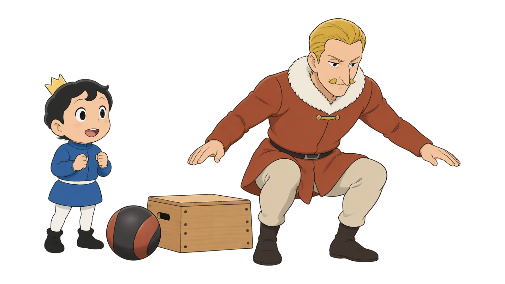
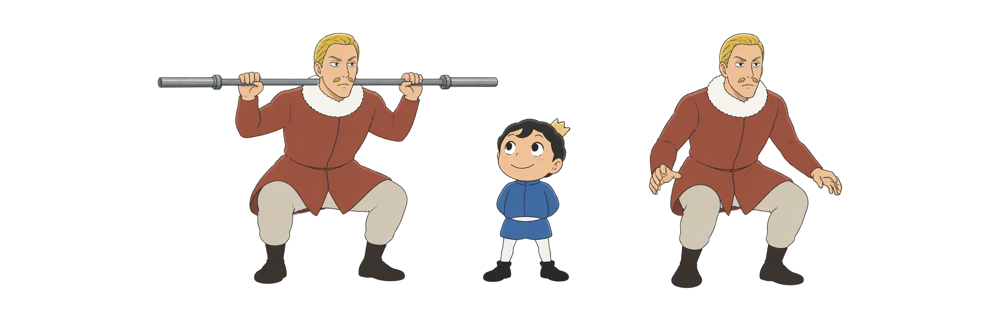
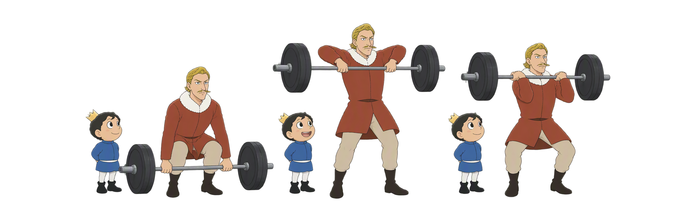
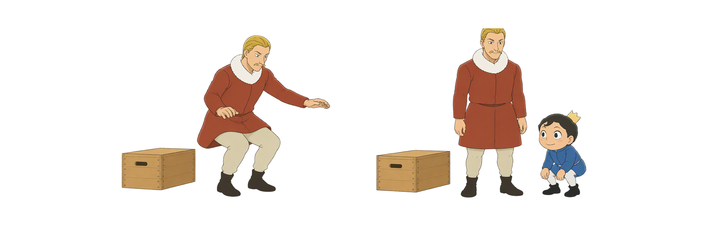
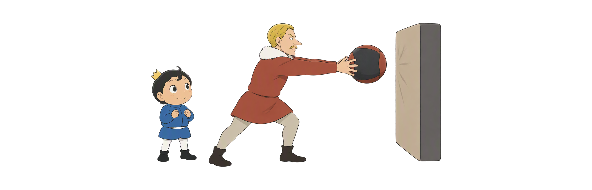
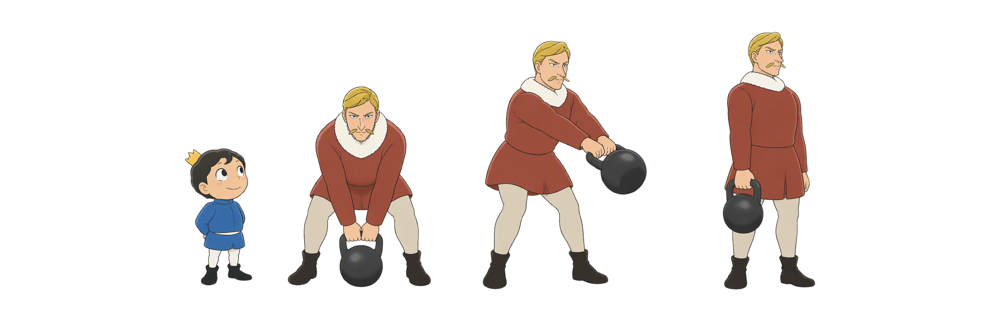
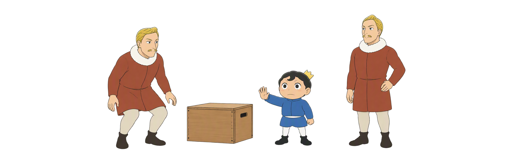

Day 49
爆发力训练：快，但先稳
先有力量和落地控制 再把每次发力做快
速度意图稳定落地少而精

先有力量和落地控制 再把每次发力做快
从力量基础和落地控制出发，选择奥举、跳跃、投掷或速度力量工具；每次都以稳定、速度与恢复共同决定剂量。
用力快 · 不失位
路径近 · 接稳
安静 · 可控
方向明确 · 可回收
轻中负荷 · 快意图
少次数 · 休息够
落地变响、速度下降、姿势失稳或出现疼痛时，先停止该组并回到可控版本。
爆发训练不是盲目抢速度，而是在稳定技术和合适负荷下尽快发力。速度、轨迹和落地一起达标，才算高质量重复。

抓举、翻举和挺举需要近身杠路径、髋膝协同与稳定接铃。拆开练每一段，能更安全地把速度接回来。

跳跃训练的进步不只来自高度。起跳、落地、停住和下一次重复都稳定，才值得逐步进阶。

药球能把全身力量快速传向目标，但球重、场地和回收都要服务于安全、完整的轨迹。

轻中负荷速度训练依靠稳定髋铰链和快速伸髋。速度来自良好地面反作用力，而不是用腰或手臂硬甩。

爆发训练的神经和机械负担较高。少次数、充分恢复和准备度观察，能让下一次重复仍保持速度和技术。
